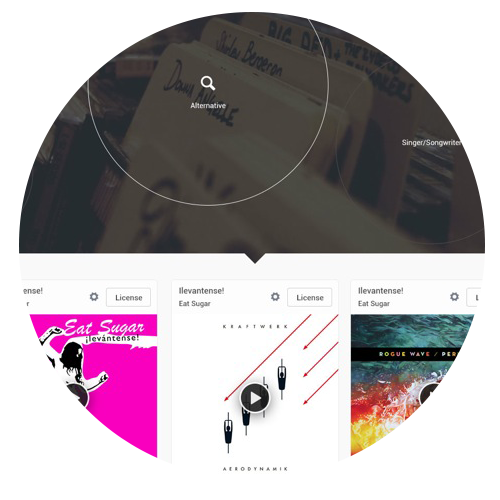

Simply click the movie button to the left or the music button to the right to begin your Synergy Media Search

Music
Click to search Spotify and Deezer
Why choose Synergy?
It's simple
There's so many different media streaming services now that it's difficult to keep track. Spotify, Deezer, Soundcloud for music. YouTube, Netflix, Amazon Video for movies. The list is endless. Using Synergy to search for media allows you to search all your favourite sites from one location

We're mobile
See for yourself
Come back to Synergy on your phone, tablet or laptop to enjoy the same media search
Listen to the UK Top 50
Updated Weekly
Click a track on the right to start listening now. All you need is a free spotify account
Keep up to date
Follow & Like us
Come back to Synergy on your phone, tablet or laptop to enjoy the same media search
Follow @SynergyMedia